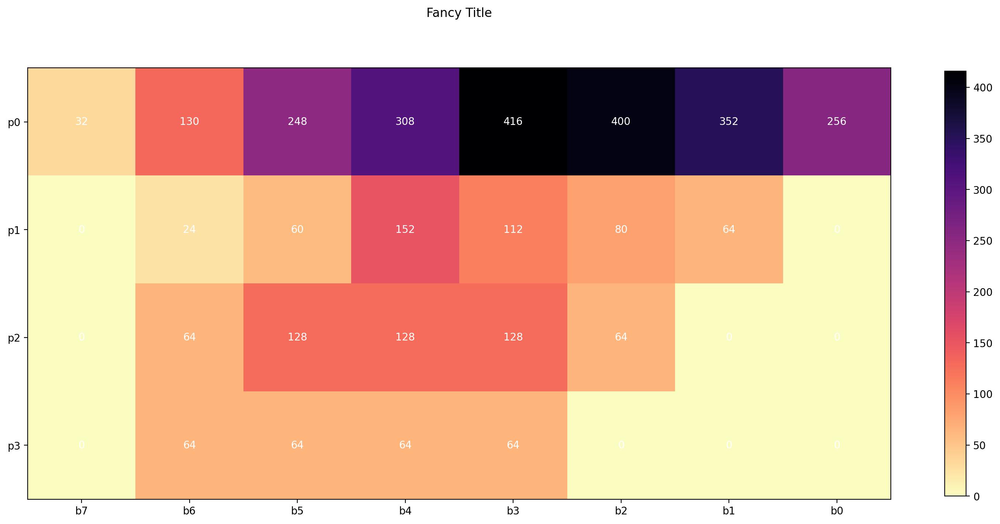
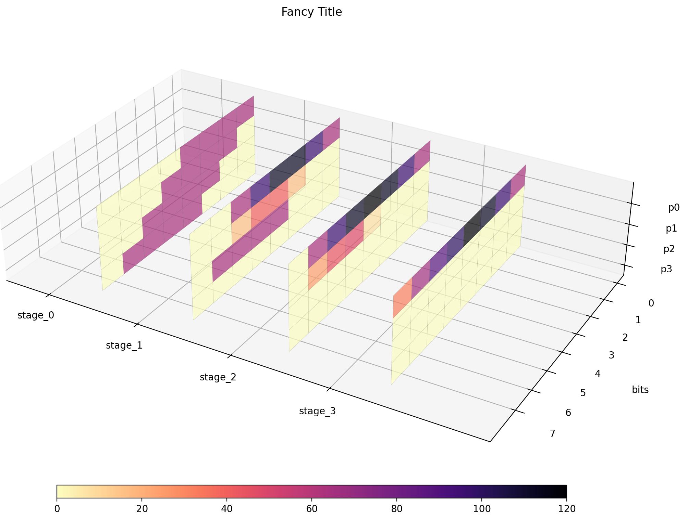

Quickstart#
This guide will quickly walk through each area of Multiplied, without delving too deeply into the details.
Algorithm Structure#
A given algorithm is defined by a sequence of “stages” which continuously reduce an initial set of partial products into a single output product.
Multiplied uses Algorithm objects to store
each stage of reduction. Each of which is made up of a Template,
pseudo Matrix, and a Map.
Templates Objects:
Represent arithmetic units via characters
Resultant templates show where bits will be placed after a given stage
Pseudo Matrix Objects:
Shows the partial product matrix after reduction and maps have been applied
Each matrix has a width two times it’s height:
two values of x-bits can multiply to produce a 2x-bit value
Maps Objects:
2-bit hexadecimal values define how far each bit is vertically shifted after reduction
Positive values shift bits up
negative values shift bits down
Templates#
Represent arithmetic units via characters
Resultant templates show where bits will be placed after a given stage
Pseudo Matrix#
A Matrix object representing partial products
Shows the partial product matrix after reduction and maps have been applied
Each matrix has a width two times it’s height:
two values of x-bits can multiply to produce a 2x-bit value
Maps#
2-bit hexadecimal values define how far each bit is vertically shifted after reduction
Positive values shift bits up
negative values shift bits down
First import the module and define the bitwidth of the algorithm:
import multiplied as mp
alg = mp.Algorithm(4)
Then automatically generate a basic algorithm.
alg.auto_resolve_stage(recursive=True) # recursive=True -- default
print(alg)
0:{
template:{
____AaAa
___aAaA_
__AaAa__
_BbBb___
__AaAaAa
__aAaA__
_BbBb___
________
}
pseudo:{
__AaAaAa
__aAaA__
_BbBb___
________
}
map:{
00 00 00 00 00 00 00 00
00 00 00 00 00 00 00 00
00 00 00 00 00 00 00 00
FF FF FF FF FF FF FF FF
}
1:{
template:{
__AaAaAa
__AaAa__
_aAaA___
________
_aAaAaAa
_AaAa___
________
________
}
pseudo:{
_aAaAaAa
_AaAa___
________
________
}
map:{
00 00 00 00 00 00 00 00
00 00 00 00 00 00 00 00
00 00 00 00 00 00 00 00
00 00 00 00 00 00 00 00
}
2:{
template:{
_aAaAaAa
_aAaA___
________
________
AaAaAaAa
________
________
________
}
pseudo:{
AaAaAaAa
________
________
________
}
map:{
00 00 00 00 00 00 00 00
00 00 00 00 00 00 00 00
00 00 00 00 00 00 00 00
00 00 00 00 00 00 00 00
}
Execution#
The algorithm can now execute using input operands to verify it works:
a = 15
b = 13
output = alg.exec(a, b)
for m in output.values():
print(m)
# convert result to decimal
print(int("".join(alg.matrix.matrix[0]), 2))
print(a * b)
____1111
___0000_
__1111__
_1111___
__110011
__0110__
_1111___
________
_1010011
_1110___
________
________
11000011
________
________
________
195
195
Stage 0 represents the initial starting partial product matrix with each following stage being reduced by Adders (“units” which cover 2 rows) and Carry Save Adders (“units” which cover 3 rows).
Generating Data#
Now a truth table can be generated and stored to a Pandas DataFrame:
import pandas as pd
domain_ = (1, 15) # range of possible operand values for a and b
range_ = (1, 255) # range of possible output values
scope = mp.truth_scope(domain_, range_) # generator clamps range to domain
# scope yields input tuples (a, b) to generate a Pandas DataFrame
df = mp.truth_dataframe(scope, alg)
DataFrame Layout#
Multiplied makes use of Pandas DataFrames
to store generated truth tables. A generated truth table can be defined by three
regions:
Operands#
These columns hold the input and output operands for a given
a b output
220 15 11 165
221 15 12 180
222 15 13 195
223 15 14 210
224 15 15 225
Formatted Output#
Stores outputs produced by a given execution of the algorithm as seen above
ppm_s_0 ppm_s_1 ppm_s_2 ppm_s_3
220 ['____1111', '___1111_', '__0000__', '_1111___'] ['__010001', '__0111__', '_1111___', '________'] ['_1110101', '_0110___', '________', '________'] ['10100101', '________', '________', '________']
221 ['____0000', '___0000_', '__1111__', '_1111___'] ['__111100', '__0000__', '_1111___', '________'] ['_1000100', '_1110___', '________', '________'] ['10110100', '________', '________', '________']
222 ['____1111', '___0000_', '__1111__', '_1111___'] ['__110011', '__0110__', '_1111___', '________'] ['_1010011', '_1110___', '________', '________'] ['11000011', '________', '________', '________']
223 ['____0000', '___1111_', '__1111__', '_1111___'] ['__100010', '__1110__', '_1111___', '________'] ['_1100010', '_1110___', '________', '________'] ['11010010', '________', '________', '________']
224 ['____1111', '___1111_', '__1111__', '_1111___'] ['__101101', '__1111__', '_1111___', '________'] ['_1101001', '_1111___', '________', '________'] ['11100001', '________', '________', '________']
Note
Multiplied provides basic tools to handle extraction of data. Check out Pandas documentation for additional functionality.
Raw Output#
s0_p0_b7 s0_p0_b6 s0_p0_b5 s0_p0_b4 s0_p0_b3 s0_p0_b2 s0_p0_b1 s0_p0_b0 s0_p1_b7 s0_p1_b6 s0_p1_b5 s0_p1_b4 s0_p1_b3 s0_p1_b2 s0_p1_b1 s0_p1_b0 s0_p2_b7 s0_p2_b6 s0_p2_b5 s0_p2_b4 s0_p2_b3 s0_p2_b2 s0_p2_b1 s0_p2_b0 s0_p3_b7 s0_p3_b6 s0_p3_b5 s0_p3_b4 s0_p3_b3 s0_p3_b2 s0_p3_b1 s0_p3_b0 \
220 0 0 0 0 1 1 1 1 0 0 0 1 1 1 1 0 0 0 0 0 0 0 0 0 0 1 1 1 1 0 0 0
221 0 0 0 0 0 0 0 0 0 0 0 0 0 0 0 0 0 0 1 1 1 1 0 0 0 1 1 1 1 0 0 0
222 0 0 0 0 1 1 1 1 0 0 0 0 0 0 0 0 0 0 1 1 1 1 0 0 0 1 1 1 1 0 0 0
223 0 0 0 0 0 0 0 0 0 0 0 1 1 1 1 0 0 0 1 1 1 1 0 0 0 1 1 1 1 0 0 0
224 0 0 0 0 1 1 1 1 0 0 0 1 1 1 1 0 0 0 1 1 1 1 0 0 0 1 1 1 1 0 0 0
s1_p0_b7 s1_p0_b6 s1_p0_b5 s1_p0_b4 s1_p0_b3 s1_p0_b2 s1_p0_b1 s1_p0_b0 s1_p1_b7 s1_p1_b6 s1_p1_b5 s1_p1_b4 s1_p1_b3 s1_p1_b2 s1_p1_b1 s1_p1_b0 s1_p2_b7 s1_p2_b6 s1_p2_b5 s1_p2_b4 s1_p2_b3 s1_p2_b2 s1_p2_b1 s1_p2_b0 s1_p3_b7 s1_p3_b6 s1_p3_b5 s1_p3_b4 s1_p3_b3 s1_p3_b2 s1_p3_b1 s1_p3_b0 \
220 0 0 0 1 0 0 0 1 0 0 0 1 1 1 0 0 0 1 1 1 1 0 0 0 0 0 0 0 0 0 0 0
221 0 0 1 1 1 1 0 0 0 0 0 0 0 0 0 0 0 1 1 1 1 0 0 0 0 0 0 0 0 0 0 0
222 0 0 1 1 0 0 1 1 0 0 0 1 1 0 0 0 0 1 1 1 1 0 0 0 0 0 0 0 0 0 0 0
223 0 0 1 0 0 0 1 0 0 0 1 1 1 0 0 0 0 1 1 1 1 0 0 0 0 0 0 0 0 0 0 0
224 0 0 1 0 1 1 0 1 0 0 1 1 1 1 0 0 0 1 1 1 1 0 0 0 0 0 0 0 0 0 0 0
s2_p0_b7 s2_p0_b6 s2_p0_b5 s2_p0_b4 s2_p0_b3 s2_p0_b2 s2_p0_b1 s2_p0_b0 s2_p1_b7 s2_p1_b6 s2_p1_b5 s2_p1_b4 s2_p1_b3 s2_p1_b2 s2_p1_b1 s2_p1_b0 s2_p2_b7 s2_p2_b6 s2_p2_b5 s2_p2_b4 s2_p2_b3 s2_p2_b2 s2_p2_b1 s2_p2_b0 s2_p3_b7 s2_p3_b6 s2_p3_b5 s2_p3_b4 s2_p3_b3 s2_p3_b2 s2_p3_b1 s2_p3_b0 \
220 0 1 1 1 0 1 0 1 0 0 1 1 0 0 0 0 0 0 0 0 0 0 0 0 0 0 0 0 0 0 0 0
221 0 1 0 0 0 1 0 0 0 1 1 1 0 0 0 0 0 0 0 0 0 0 0 0 0 0 0 0 0 0 0 0
222 0 1 0 1 0 0 1 1 0 1 1 1 0 0 0 0 0 0 0 0 0 0 0 0 0 0 0 0 0 0 0 0
223 0 1 1 0 0 0 1 0 0 1 1 1 0 0 0 0 0 0 0 0 0 0 0 0 0 0 0 0 0 0 0 0
224 0 1 1 0 1 0 0 1 0 1 1 1 1 0 0 0 0 0 0 0 0 0 0 0 0 0 0 0 0 0 0 0
s3_p0_b7 s3_p0_b6 s3_p0_b5 s3_p0_b4 s3_p0_b3 s3_p0_b2 s3_p0_b1 s3_p0_b0 s3_p1_b7 s3_p1_b6 s3_p1_b5 s3_p1_b4 s3_p1_b3 s3_p1_b2 s3_p1_b1 s3_p1_b0 s3_p2_b7 s3_p2_b6 s3_p2_b5 s3_p2_b4 s3_p2_b3 s3_p2_b2 s3_p2_b1 s3_p2_b0 s3_p3_b7 s3_p3_b6 s3_p3_b5 s3_p3_b4 s3_p3_b3 s3_p3_b2 s3_p3_b1 s3_p3_b0
220 1 0 1 0 0 1 0 1 0 0 0 0 0 0 0 0 0 0 0 0 0 0 0 0 0 0 0 0 0 0 0 0
221 1 0 1 1 0 1 0 0 0 0 0 0 0 0 0 0 0 0 0 0 0 0 0 0 0 0 0 0 0 0 0 0
222 1 1 0 0 0 0 1 1 0 0 0 0 0 0 0 0 0 0 0 0 0 0 0 0 0 0 0 0 0 0 0 0
223 1 1 0 1 0 0 1 0 0 0 0 0 0 0 0 0 0 0 0 0 0 0 0 0 0 0 0 0 0 0 0 0
224 1 1 1 0 0 0 0 1 0 0 0 0 0 0 0 0 0 0 0 0 0 0 0 0 0 0 0 0 0 0 0 0
[s]tage
Index ranging from 0 to the number of reductions needed to return a single product
[p]artial product
A given row in a partial product matrix
[b]it
Bit index within a partial product
Note
Here’s the column index and dtypes for a generated truth table:
Index(['a', 'b', 'output', 's0_p0_b7', 's0_p0_b6',
's0_p0_b5', 's0_p0_b4', 's0_p0_b3', 's0_p0_b2',
's0_p0_b1',
...
's3_p3_b5', 's3_p3_b4', 's3_p3_b3', 's3_p3_b2',
's3_p3_b1', 's3_p3_b0', 'ppm_s_0', 'ppm_s_1',
'ppm_s_2', 'ppm_s_3'],
dtype='str', length=135)
a int32
b int32
output int32
s0_p0_b7 int8
s0_p0_b6 int8
...
s3_p3_b0 int8
ppm_s_0 str
ppm_s_1 str
ppm_s_2 str
ppm_s_3 str
Length: 135, dtype: object
Visualisation#
Finally, the generated data is ready to be visualised. Let’s keep it simple and generate a 2D heatmap:
mp.df_global_heatmap("example.png", "Fancy Title", df)
2D
Output: 8-bit, Stages: 4
[[ 32 130 248 308 416 400 352 256]
[ 0 24 60 152 112 80 64 0]
[ 0 64 128 128 128 64 0 0]
[ 0 64 64 64 64 0 0 0]]

And a 3D heatmap, isolating each stage of the algorithm:
mp.df_global_3d_heatmap("example3d.png", "Fancy Title", df)
3D
Output: 8-bit, Stages: 4
[[[ 0 0 0 0 64 64 64 64]
[ 0 0 0 64 64 64 64 0]
[ 0 0 64 64 64 64 0 0]
[ 0 64 64 64 64 0 0 0]]
[[ 0 0 64 96 112 112 96 64]
[ 0 0 16 40 40 16 0 0]
[ 0 64 64 64 64 0 0 0]
[ 0 0 0 0 0 0 0 0]]
[[ 0 64 96 112 120 112 96 64]
[ 0 24 44 48 8 0 0 0]
[ 0 0 0 0 0 0 0 0]
[ 0 0 0 0 0 0 0 0]]
[[ 32 66 88 100 120 112 96 64]
[ 0 0 0 0 0 0 0 0]
[ 0 0 0 0 0 0 0 0]
[ 0 0 0 0 0 0 0 0]]]
